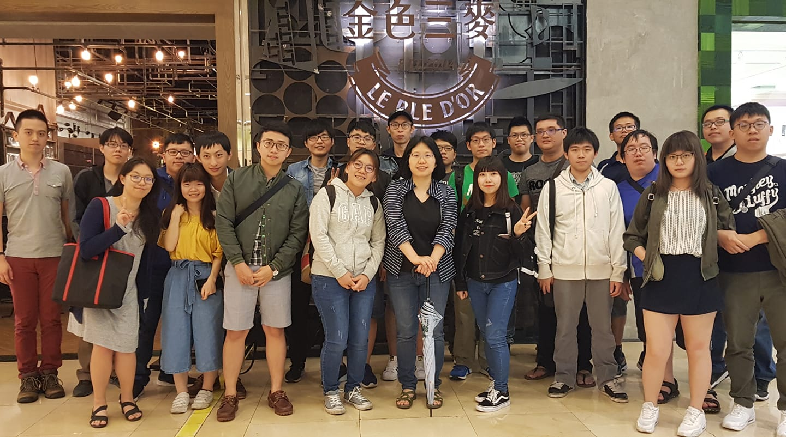

實驗室簡介
大家好，我們是國立中央大學，高速通訊與計算實驗室
歡迎對無線通訊、5G、物聯網與嵌入式系統安全有興趣的同學，加入本實驗室一同努力！
本實驗室目前的研究領域如下：
- 5G - 第五代行動通訊技術
- IoT - 物聯網相關應用
- Edge Computing - 邊端運算
- Satellite Network - 衛星網路
- Security of Embedded System - 嵌入式系統安全
若想深入了解本實驗室的研究領域內容，請點選本網站右上角的 Research 查看，謝謝！

5th Generation Mobile Networks
IoT Security
Satellite Network
Other Network Technologies
指導教授
張貴雲
Prof. Guey-Yun Chang
學經歷
國立中央大學 資訊工程學系 教授國立台灣大學 資訊工程學系 博士
專業領域
物聯網無線感測網路
演算法
聯絡方式
信箱: gychang@csie.ncu.edu.tw辦公室: 中央大學工程五館 B-310
分機: 中央大學 #35310
實驗室: 中央大學工程五館 A-310